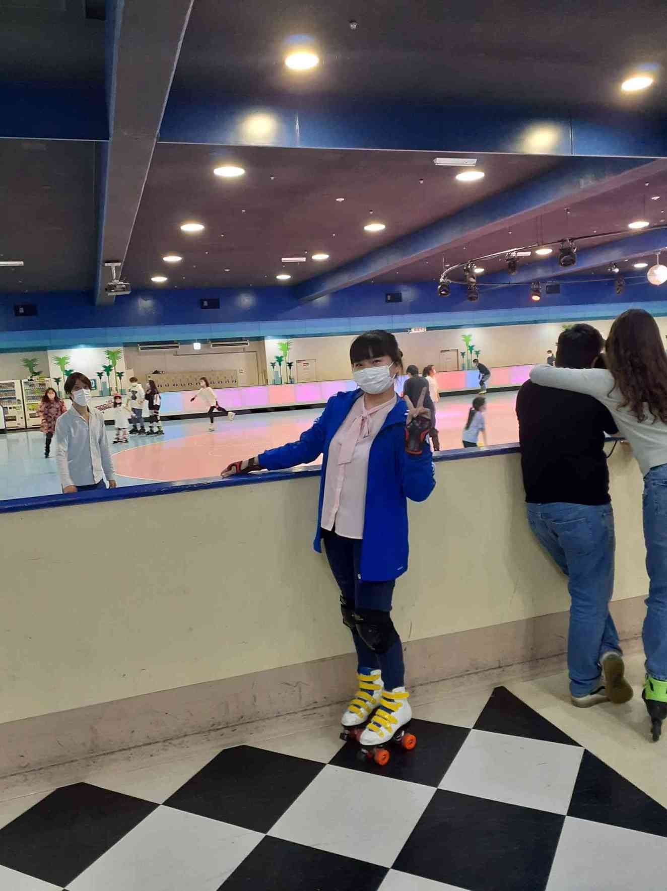

Game
-
Go Ski

Japan - top destinations for skiing Japan ranks consistently as one of the top destinations in the world for skiing and snowboarding. Thanks to the cold winds that blow over the Sea of Japan, the country receives some of the highest amounts of snow in the world...
-
Roller Skaters
Roller Skaters The days of skating around in an oval rink have given way to a dancy. But is it good exercise? Roller skating absolutely can be good exercise. It can improve your strength, balance, core stability, and cardiovascular endurance.
-
Bowling